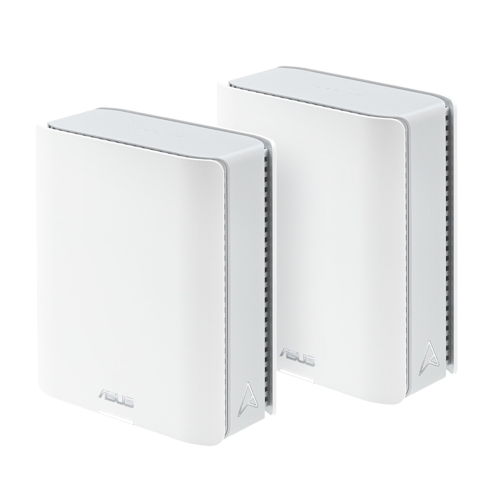
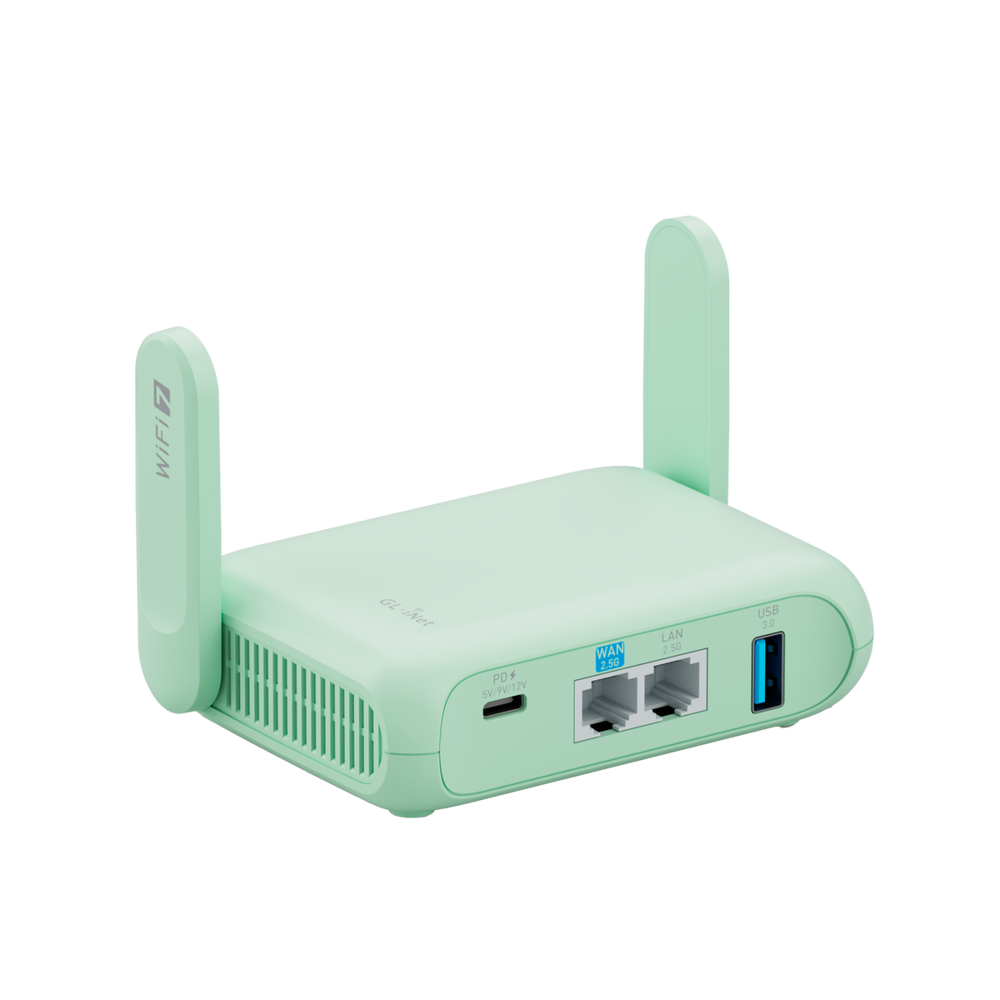
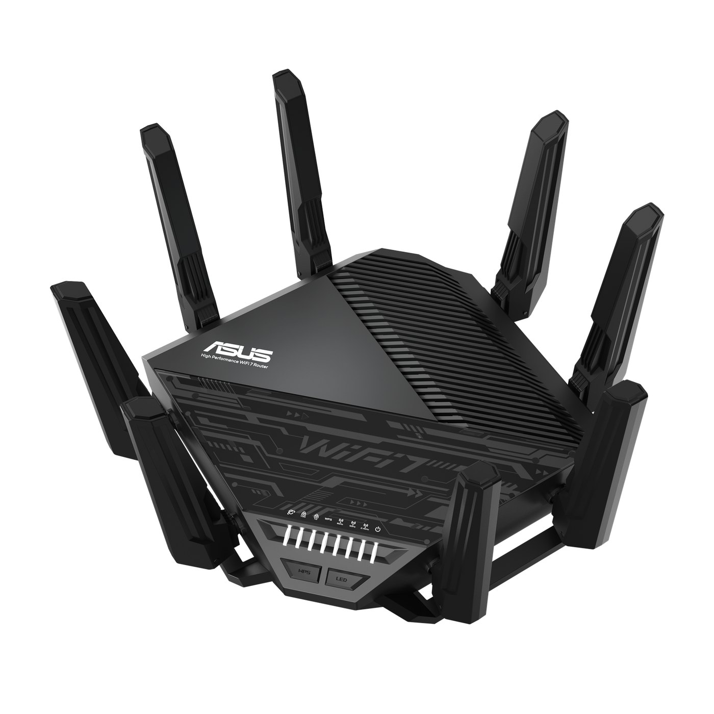
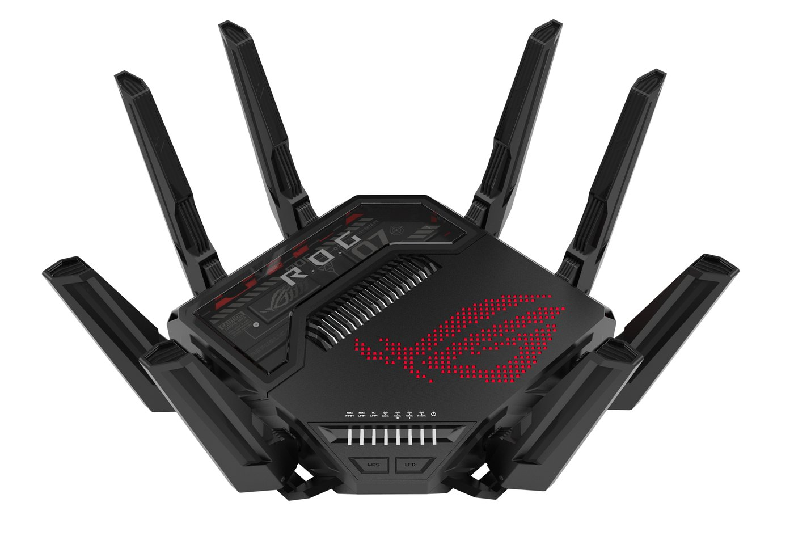

Guide · Networking
The best Wi-Fi 7 router in 2026 is the one you can flash
Buy the ASUS ZenWiFi BT8. It's a tri-band Wi-Fi 7 mesh node with an official OpenWrt build, which is the combination most of the big flagship routers still can't offer.
Want something smaller? The GL.iNet Beryl 7 is the OpenWrt-first travel router. Happy to stay on stock firmware? The ASUS RT-BE96U is the throughput pick, and the ROG Rapture GT-BE98 is the spec-sheet ceiling. Neither of those two has an official OpenWrt image today.
| If you want | Get this | Official OpenWrt? |
|---|---|---|
| Whole-house Wi-Fi 7 you can flash | ASUS ZenWiFi BT8 | Yes — 25.12.6 |
| A compact, OpenWrt-first box | GL.iNet Beryl 7 | Yes — 25.12.6 |
| Max speed on stock firmware | ASUS RT-BE96U | No |
| The spec-sheet ceiling | ROG Rapture GT-BE98 | No |
Your smart plugs will not throw a party. Wi-Fi 7's new tricks — wider 6 GHz channels, denser signaling, and Multi-Link Operation — are for phones, laptops and TVs. Almost every sensor, camera and Thread gadget still lives on 2.4 GHz, where Wi-Fi 7 adds essentially nothing over Wi-Fi 6. The real smart-home win is indirect: move the hungry clients onto 6 GHz, and 2.4 GHz finally gets some air. We unpack the standards in Wi-Fi 6 vs Wi-Fi 7.
The pick: ASUS ZenWiFi BT8

This is the rare ASUS Wi-Fi 7 mesh box that already has an official OpenWrt 25.12.6 image. You can run it as a single router, an access point or a mesh node, and it's sold in one-, two- or three-packs. Each node has a 6 GHz band, dual 2.5-gigabit ports you can use for wired backhaul, and enough memory to run a serious local network stack.
If you already run Home Assistant because you want the house on firmware you control, start here. Stock ASUS firmware is polished. OpenWrt is yours.
The compact alternative: GL.iNet Beryl 7

The Beryl 7 (GL-MT3600BE) is a dual-band Wi-Fi 7 travel router that ships with OpenWrt-based firmware and also has a vanilla OpenWrt 25.12.6 build. There's no 6 GHz band, which sounds like a downgrade until you remember your IoT devices were never going to use 6 GHz anyway. It's the right box for a small space, a lab, a trip, or a second SSID you actually want to understand.
GL.iNet has also announced the Flint 4 (GL-BE14000). It isn't in OpenWrt's device database yet, so there's no official vanilla build — only GL.iNet's own firmware for now. For a whole house, the BT8's extra band and mesh packs are why it remains the lead pick.
If you're staying on stock firmware

The RT-BE96U is ASUS's tri-band BE19000 flagship: 4×4 radios, dual 10-gigabit ports, and the full Wi-Fi 7 feature set. It is not in the OpenWrt device database. Buy it for the radios and the ASUS app, not because you plan to flash it later.

The ROG Rapture GT-BE98 is the quad-band BE30000 ceiling — three 10-gigabit ports and enough antennas to look like a set piece. Also no official OpenWrt build. Great for a house full of multi-gigabit clients. Not a smart-home purchase.
What actually changes for a smart home
A new router does not make a 2.4 GHz sensor faster. Multi-Link Operation needs a Wi-Fi 7 client, which your door sensor is not. What a tri-band box can do is take laptops and TVs off the crowded band your Home Assistant gadgets share. Two mesh nodes usually beat one sculpture in the hallway; the BT8's extra band is mainly backhaul when you don't have Ethernet between rooms.
If local control is why you run a smart home, the router belongs in that stack. OpenWrt (or GL.iNet's OpenWrt-based stock) keeps firewall rules, VLANs, DNS and WireGuard in config files you own. The flagship ASUS app is nicer. It is also a vendor-cloud tradeoff. We cover the VLAN side in a separate IoT VLAN guide.
For tinkerers
OpenWrt's current stable release is 25.12.6 (oldstable 24.10.8). We checked official builds against the OpenWrt device database as refreshed on 9 November 2026. Anything missing from that list has no official image.
- ASUS ZenWiFi BT8 — official 25.12.6 build on MediaTek Filogic, profile
asus_zenwifi-bt8, plusasus_zenwifi-bt8-ubootmodif you want the U-Boot layout. See the OpenWrt device page and the firmware selector. - GL.iNet Beryl 7 (GL-MT3600BE) — official 25.12.6 build, profile
glinet_gl-mt3600be. See the OpenWrt device page and the firmware selector. - Also official 25.12.6 builds: the Routerich BE7200 and the TP-Link BE450.
- Not in the database: the ASUS RT-BE96U, ROG Rapture GT-BE98, and GL.iNet Flint 4 (GL-BE14000).
To flash either box: confirm the exact hardware on the OpenWrt device page, pick the matching profile (don't cross-flash the BT8's two layouts), download 25.12.6 from the firmware selector, and follow the device-page steps. Set a password, SSIDs and DNS by hand afterward — don't restore a stock backup onto OpenWrt. Our travel router guide covers the small-router case.
BT8 numbers from ASUS's spec page: BE14000 class (688 + 4,323 + 8,643 Mbps), 3×3 on 6 and 5 GHz, 2×2 on 2.4, 1 GB RAM, 128 MB flash, one 2.5G WAN, one 2.5G LAN, two 1G LAN and USB 3.0. Stock firmware includes WPA3, DNS-over-TLS and WireGuard. The headline Wi-Fi 7 features — 320 MHz channels in 6 GHz, 4096-QAM, Multi-Link Operation and Multi-RU puncturing — all live above 2.4 GHz.
- Primary sources
- ASUS ZenWiFi BT8 specs; ASUS RT-BE96U specs; ASUS Wi-Fi 7 lineup press release; GL.iNet Beryl 7 (GL-MT3600BE); OpenWrt: ASUS ZenWiFi BT8; OpenWrt: GL.iNet GL-MT3600BE; OpenWrt firmware selector
- Where to look
- ASUS ZenWiFi BT8 on Amazon; GL.iNet Beryl 7 on Amazon; ASUS RT-BE96U on Amazon; ASUS ROG Rapture GT-BE98 on Amazon
As an Amazon Associate, HA News earns from qualifying purchases.